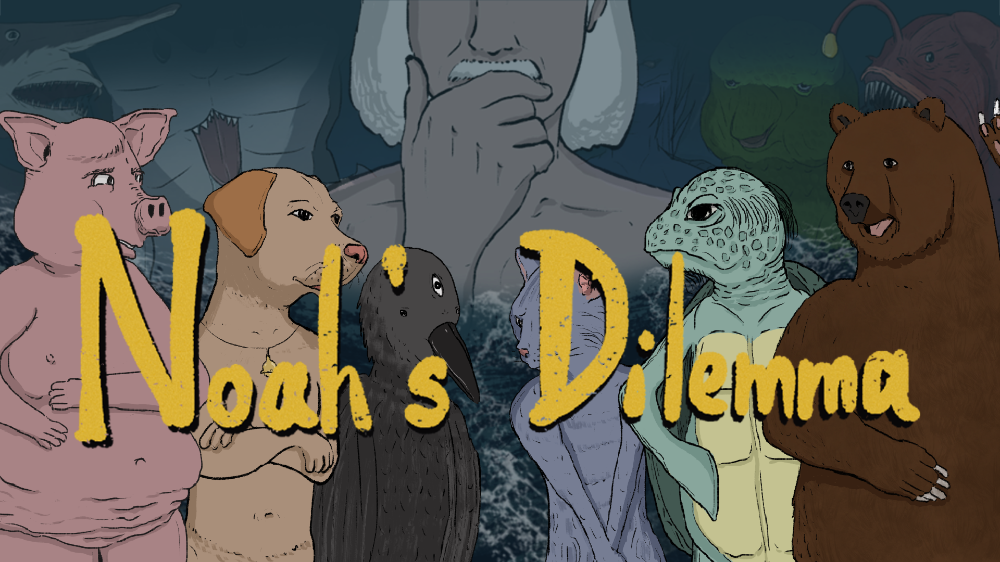
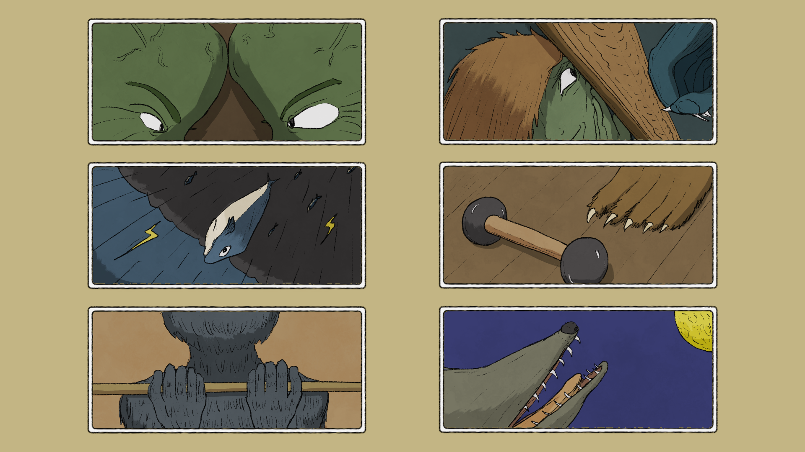
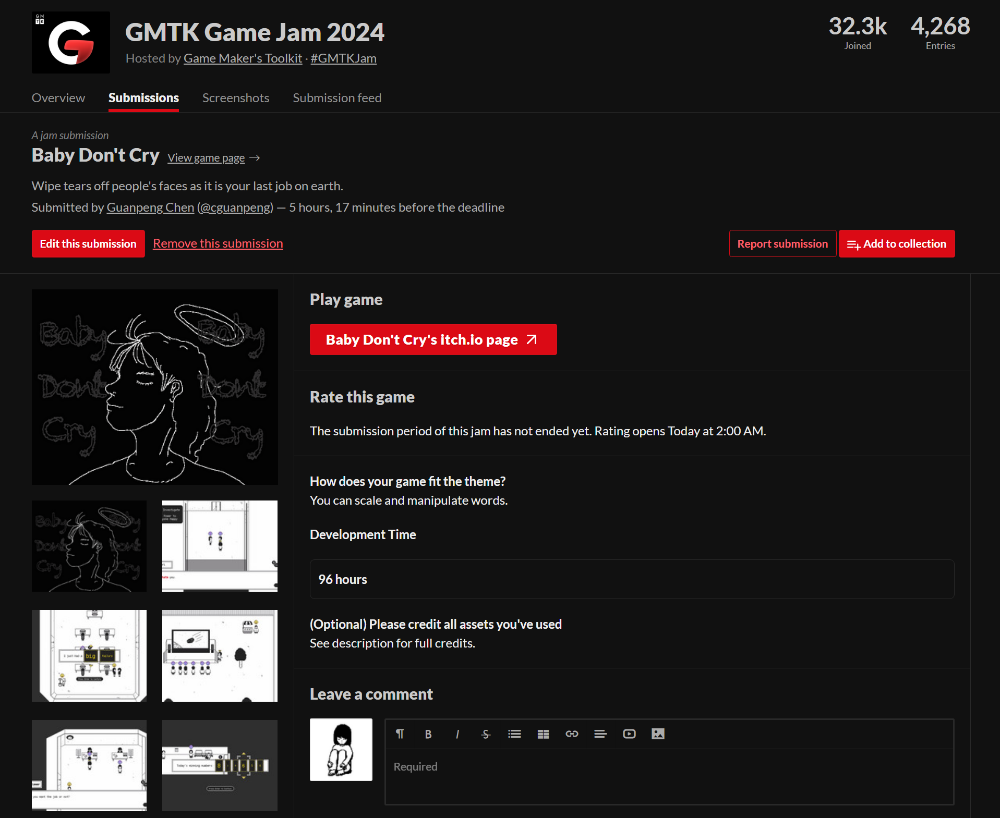
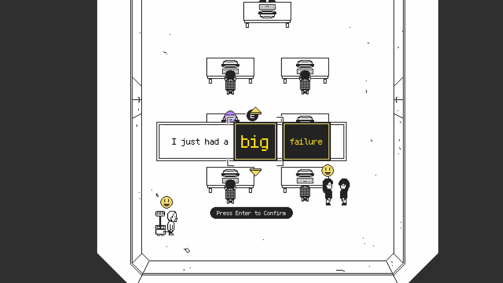
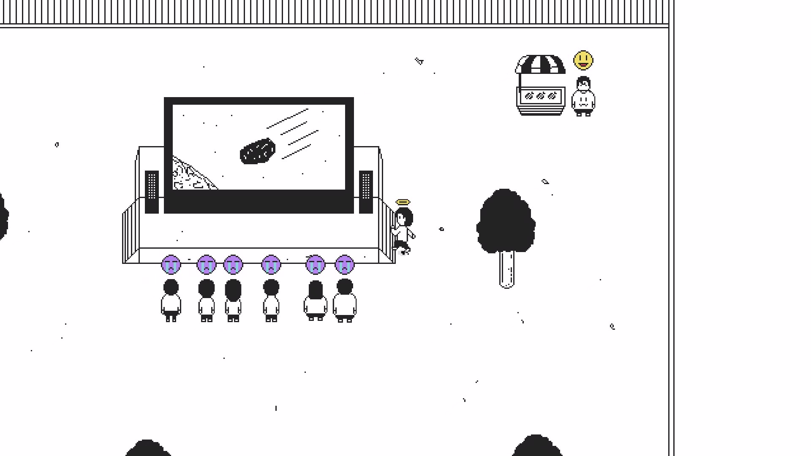

2024年终总结：追梦如耕种
难以想象过去的整整一年，我每天不是为了升学考试，也不是为了资本家老板的梦想醒来，而是为了去做自己真正喜欢并认为有意义的事。
虽然活到30岁才第一次有了这样的机会，但我知道这已经非常幸运。当然，我并不想说打工就是坏，打工也可以是为了自己的未来打工，我也是打了五年工才达成足够的条件辞职，而且在经历了这一整年独立的日子后，我可以确切地说独立也有独立的痛苦，打工也有打工的幸福，关键还是看自己主动选择去吃哪种苦，只要是自己选的，就算再苦也带着甜。2024似乎也是近十年里我在网上发言最少的一年，但年终总结还是照旧写，希望能把那些憋着没说的话在这里补上一二吧。首先，还是依照惯例看看2024的目标完成得怎么样了。
年度目标完成情况
1. 独立完成并发售一款新游戏 ×
截止至12/31，已经独立完成了新游戏大概95%的内容，但发售肯定要等2025了，所以——没有达成。当时写下这个目标时估计还天真地想着能做一款短篇游戏发售，而实际上今年也尝试做过side project，但最后发现自己的精力并不足以支撑同时开发两个商业游戏，于是还是选择了专注于《诺亚的困境》，而《诺亚》的体量也确实不是一年就能做完的。说实话，能在年末做到95%我已经很满意了。
2. 推出《空箱》的Steamdeck版（有余力的话加上Switch版） ×
没有达成。如上文所言，没有余力，是真的没有余力。2024年刚开始的时候还有冲劲去做《空箱》的手柄对应，但后来越做越发现《空箱》根本不适合用手柄玩之后就失去做下去的动力了。对现在的我来说，做新游戏的优先度应该远高于补强一个老游戏，感觉自己定的前两个目标都有些太理想化了，今年吸取教训，争取把目标定得更合理一点。
3. 新的个人网站 √
达成！新的个人网站在2024年1月21日就做完了，用11ty+Tailwind CSS搭建。这个网站主要就是用来记录自己做的游戏，兼具一个博客功能，可惜一整年只发了一篇中文的开发日志，2025年应该会多发一点。
4. 一口气跑2000m √
达成！没记错应该也是1月份就达成了。达成得太早导致那之后就把跑步荒废了，深刻反省。而且一口气跑2000m似乎比我想象中简单，跑得太少导致定目标也不会定。不过现在知道了，如果要定体育锻炼类的目标，比起这种一次达成的还是定需要长期坚持的目标为妙。
5. 用书、游戏、电影填满手账上的“My 100” √
达成！填满了100项之后位置不够又另开了一页记录，今年的input一共是123项，其中有个别项目存在看到一半弃掉的情况。越来越喜欢手写记录，看list慢慢被填满会有满足感。2025年还是会继续用hobonichi weekly系列手账，而且2025年版也有My 100部分（太好了），所以依旧打算继续这个传统。

完成了的My 100
总的来说，虽然2024年的目标完成率只有60%，但起码最重要的新游戏是实打实地做了95%，还是可以接受的。最大的问题应该是目标本身定得太随意了，对比去年就知道了，目标不够细化导致没有一种被目标引导的感觉。2025年的目标要定得更为深思熟虑一点。
生活
今年几乎没发什么东西可能就是因为我的生活真的太简单了——除了吃饭睡觉上网，就是做游戏。我的家人们经常担心我只有一个人做游戏会很累，但其实这种简单的、规律的、不需要与人打交道的、完全由自我掌控的创作生活对我来说是一种享受。在这种状态下工作8小时所感受到的累，大多时候只等同于在公司坐班2小时。有时候进入状态了，一天工作10小时以上都不觉得累，只会觉得为什么一天只有24个小时，为什么人要吃饭睡觉，恨不得自己是一个机器人…… 好吧，越写越意识到他们担心的是什么了。但说真的，只要睡够吃饱，我觉得我还是会比上班的时候健康，毕竟上班的时候肯定是睡眠不足的，还有各种无法掌控的随机事件和社交压力。总之，现在别人担心我太累，或者当我自嘲自己是工作狂时都会有点心虚——毕竟我只是在做我喜欢的事情而已。
也因为今年的生活完全可以由自己规划了，第一次从头到尾用完了一本手帐（hobonichi weekly），也是第一次坚持了一整年的每日to do list（后来才知道有个东西叫bullet journal，和我做的事情差不多）。手写的机会多了，甚至还跑去文具店对比起了哪支笔最好用，以前觉得这种事情只有文具nerd才会干，没想到自己也干了。融合了实体与电子的日程规划与记录的方法在经历了几年的迭代后好像终于在2024年被我找到了它最适合我的形态，于是2025年依旧打算延续今年这个配置，本子的牌子和型号都不打算换，这种规则有序的安排让我的脑子非常舒适。
生活上还有一件值得一提的事就是11月的时候开始了在咖啡馆工作的routine。家里面的工作房间虽然已经被我布置成了极简的样子，但久而久之没有外界监督还是太容易分心了。而且在家里干活还要担心吃饭的问题，一吃饭又要准备饭又要看电子榨菜又要饭后收拾，一来一去时间就过去了。于是在11月换了新的足以支撑游戏开发的手提电脑后便果断选择了去咖啡馆工作，不仅冬暖夏凉，还完美解决了缺少监督和吃饭的问题，干活效率得到了显著提高。倒也不吃惊，毕竟当年的毕业论文也是靠咖啡馆才赶出来的。我爱咖啡馆！
最后再聊一聊经济方面，我这一年每个月的花销加上房租基本都保持在10w日元左右，除了吃的和偶尔买书基本不买东西（除了工作需要买的新手提电脑）。发售了的第一款独立游戏《空箱》在Steam上可以带给我平均一个月3~5w日元的被动收入，所以其实存款消耗的速度并没有我想象中快。但我也不会因为这个就给自己延长开发时间，游戏肯定是做得越快越好的，就算新游戏发售后收支平衡了我也打算把开发规模变小，把开发周期缩短来降低风险。

早餐午餐都在咖啡馆解决
创作
除了生活变简单了，今年发言少的另一个原因，就是几乎没有得到任何来自外界的好消息。从年初报名的独立游戏比赛，到最近申请的独立游戏线上展会，报名的参选的所有东西全都落选了。虽然这些活动都是拿着半成品的新游戏去报名的，但是接二连三的拒绝还是让人怀疑自己。于是贯穿一整年创作生活的是不断地质问自己——这个游戏真的可以吗——再不断地自我回答：他们只是没有办法像我一样看到它完成的样子。
我也许是错的，也许它真的不够好，但如果我现在无法相信自己的判断，它连变好的可能性都不会有了。而事实上《诺亚的困境》也真的是经历了多次大改后，直到2024年10月才变得真正好玩起来，以至于我完全理解了为什么它之前参选时没有被选上。当然，我知道即便当《诺亚》作为我满意的完成品发售也肯定会有人讨厌它的，面对这永恒的创作者与外界评价的问题，2024年教会我重要一课的是导演Ridley Scott。雷导在一次BBC Studios的采访时说自己自从拍完Legend之后就选择不会再看自己电影的媒体评价了，无论它是好是坏，因为他认为自己就是自己作品最严格的critic，拍完一部电影之后，他自己判断它好还是不好，然后就move on。这种“自己是自己最严格的critic”的心态是我想要学习的，因为它暗藏的message是做一个作品最重要的是先要让自己满意，而不是去讨好别人，只要自己有了判断，别人说的东西、下的结论其实并没有那么重要。创作者的心理健康对于能否持续产出作品有举足轻重的影响，而这个方面除了自己去搜刮资料总结前人经验几乎没有什么standard的应对方案。今年我也是为了自己的心理健康做了一系列决定，为了今后可以持续不断地产出作品。
于是乎今年和外界唯一的接触就是5月初的时候带《诺亚》的早期demo参加了东京的一个小型独立游戏展Tokyo Game Dungeon（为什么这个没有落选是因为这个展报上名了就能去，没有审查环节）。在展会上得到的反馈还不错，也成为了支撑我默默开发一年的动力之一。啊，差点忘了今年还第一次去参加了Tokyo Indies，一个每个月一次在东京举办的独立游戏开发者之间的交流分享会，体会就是氛围很好，但是不适合我（i人）一个人去……

《诺亚的困境》
接下来聊一聊创作本身吧。我现在在做的这款新游戏《诺亚的困境》是一款策略型的roguelike游戏（详情可看Steam商店页），虽然是第一次做roguelike游戏，但是多亏了《诺亚》之前夭折的那么多原型和四年半的搬砖经验，在编程方面进行得很顺利。它应该是至今为止我做过最复杂的游戏了，但至今代码的可读性和延展性都保持得挺好，唯一遇到的问题就是我写随机逻辑的时候用了UnityEngine.Random，开发的后期才发现这样没法重现随机状态，花了整整三天重构代码。今年还认真读了Lucas Pope写的Papers Please的开发日志，里面提到说他自己写了一个程序进行auto playtest，我读了之后才意识到自己也可以这么干，于是也尝试写了一个。虽然说只能测出最基础的crash和bug，一前一后还是给自己节省了不少debug时间。有了《空箱》的前车之鉴，这次选择《诺亚》作为新项目时我就考虑到了将来要上switch和steamdeck的问题，所以这次的UI设计、UX设计等从一开始就考虑到了以后要做手柄对应。本地化也是从一开始就实装上了。这两点在现在被证明是完全正确的，要是在开发后期才考虑手柄对应和加入本地化将会浪费很多时间。
在美术方面，《诺亚》这次完全使用2D手绘作画，作画软件是免费的Krita，作画工具是一块手绘屏。选择Krita的主要原因除了免费，就是看上了它的自动上色功能：我只需要把区域大致划分好、把颜色决定好，程序就能帮我把各个区域涂上色，节省了大量时间。在画了一年手绘之后，也是明显感觉到了自己画力的进步，最明显的就是现在的我看之前自己画的漫画，可以一眼就看出哪里画得不好了，而当时却根本注意不到。通过这一年的作画，我也有了以后自己负责美术的信心，起码做2D游戏不用再限制美术风格为像素画了。

最近画的一些游戏内插图
而音乐方面，无疑是我这次做游戏最大的挑战，因为我不仅是第一次为游戏（or anything else）作曲，还必须要写符合《诺亚》风格的管弦乐。等同于本来就没什么基础，突然一上来就要做难题。这也是为什么音乐拖延到了游戏快做完的时候才来做…… 不过要说今年是0基础开始也不对，因为去年就有学习过一小段时间作曲，于是12月的时候又重新看了一遍当时看的那些教授乐理的视频（推荐Andrew Huang的“Learn music theory in half an hour”）。然后虽然上次学的是FL Studio，但听说Logic Pro的UI更直观一点，操作更简单一点，这次就换成了Logic Pro（反正FL Studio也忘得差不多了……）。虽然用的软件不同，但是和绘画软件一样，不同的DAW其实也有很多共性，需要互动的元素大同小异，加上Logic Pro的UI真的很intuitive，于是很快就熟悉操作了。
知道了怎么选音源怎么input midi notes，但具体要怎么写呢？这个部分我很难描述自己具体是怎么做到的（可以描述的就是chatGPT教了我很多），有种先点亮了很多分散的知识点，然后它们积累得足够多了终于联通了的感觉；也可以说是目标导向吧，先有了一个目标，知道自己想写什么样的歌，然后到处搜刮抵达目标的方法。虽然我也没有写得很好，只能说达到了我觉得游戏里能用的水准。如果一定要分享一些心得的话，我会说：乐理是最重要的，作曲可以不懂乐器，但最好要懂乐理，不然很多时候能不能写出好歌纯属碰运气；其次重要的是，在学习编曲软件的时候要优先看别人是怎么样完整地写完一首歌的，先了解了做这个事情的结构或者说步骤，才能让自己摸索各个step的速度变快，对症下药嘛。要说我比别人学作曲有什么优势，大概就是我0基础学过太多东西了，我知道这是一个什么样的过程，以及我相信自己可以做到&我有必须做到的理由。有一个概念已经被很多创作者提出过了，那就是“不要练习”，一上来就直接做作品，这样的进步和学习速度是最快的——回过头看，我学编程和作曲也都是先有一个想做的东西，没有经历多少练习就直接去做了，结果确实是在做作品的过程中就学会了，所以可能的话，也推荐大家试试这个方法。
感觉上面的部分写得有点意识流，不过大概就是一些想写而未写的浓缩版开发日志。本来今年想写几篇《诺亚》的开发日志，结果只写了一篇，也许游戏做完后会慢慢补上。视频版的开发日志比文章好产出，受众也更广，于是今年也抽空做了三集，旨在记录《诺亚》从发售前200天到发售的全过程——但是在进入最紧张的开发阶段后也暂时搁置了，不过这个倒数系列肯定会补完的，不然停在中间太难受了……
今年还有一个值得一提的创作活动，那就是再次参加了GMTKJam，在4天里做完了一个完整的小游戏。去年参加的时候因为最后提交的时候出了问题，游戏做完了但没有提交上，今年终于顺利做完提交了。这次也算是利用了Gamejam的时间限制，把一个自己一直都想尝试的与语言有关的玩法真正实现了一次。在互评阶段得到的评价也不错，给了我一些将来把它做成商业游戏的信心。链接我放在下面了，感兴趣的朋友可以在浏览器上玩玩看（只有英文版）。

GMTKJam提交页面

游戏截图1

游戏截图2
总的来说，今年的创作生活还是一个主项目接二连三被外界否定，只剩自己默默耕耘的状态，而我也认为这是创作的常态。最后结出的果实可能会被很多人看到，但是只有极少数人会在它还没长大的时候就认出或关心它长大的样子（除了耕种的你自己），所以想要有任何结果，必须先耐心地将它完成。当然，即使完成了，最后的果实被看到了，甚至被人喜欢了，最终会去关心它是怎么样被种出来的人也会非常少，所以我要感谢读到这里的你，或许你就是那极少数的在我的作品面世前就给予关心的人。
作品
今年没有发售商业游戏作品，但还是有一些可以称之为创作成果的东西，汇个总吧：
1. GMTKJam 2024 参赛作品《Baby Don’t Cry》
2. 《诺亚的困境》开发日志#1：数独与方舟
3. 《诺亚的困境》视频开发日志#1：发售倒数200天
4. 《诺亚的困境》视频开发日志#2：发售倒数180天
5. 《诺亚的困境》视频开发日志#3：发售倒数150天
2025年目标
1. 完成并发售《诺亚的困境》（Steam平台）
2. 完成并发售《诺亚的困境》（Switch平台）
3. 完成并发售《诺亚的困境》原声带（Steam平台）
4. 补完《诺亚的困境》开发日志系列（文章和视频）
5. 完成下一款游戏的原型（这次的体量要控制在6个月可以做完的程度）
6. 庆祝《空箱》五周年 with something
7. 用书影游填满My 100
8. 建立一个包含咖啡馆工作与运动环节的routine
结语
虽然我说自己今年是独自默默耕耘，但其实我也得到了很多来自家人朋友的鼓励和支持，我经常也会想到互联网上素未谋面但默默支持着我的朋友，有些可能是认识我很久的网友，有些可能是通过《空箱》知道了我的玩家，这些人是我收获之后想第一批送去果实的人，因为我知道他们会打从心底地为我开心。也是因为有你们的存在，这一年的路其实走得也没那么孤单，谢谢你们。
新的一年，希望我们都可以更多地为自己的梦想醒来，希望2024年努力种下的一切都可以开花结果。

2024年手账的最后一页
GP
2025.1.3
于日本藤泽